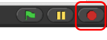

From the previous exercise, you may have figured out
what the
 block does. The forever block is the
first block you have see that holds, or wraps around, other blocks.
We call this a C block because of its shape. As the name forever implies, it will run the blocks inside it again and
again and again and ... well, forever. You will find this block under the Control tab.
block does. The forever block is the
first block you have see that holds, or wraps around, other blocks.
We call this a C block because of its shape. As the name forever implies, it will run the blocks inside it again and
again and again and ... well, forever. You will find this block under the Control tab.

Will a
block ever stop?
Not unless you tell it to: Click on the stop sign icon on the
upper right hand corner of the Snap! window.

This stop sign will stop all scripts that are running in any sprite. This is
equivalent to executing the  in the
in the Control palette.